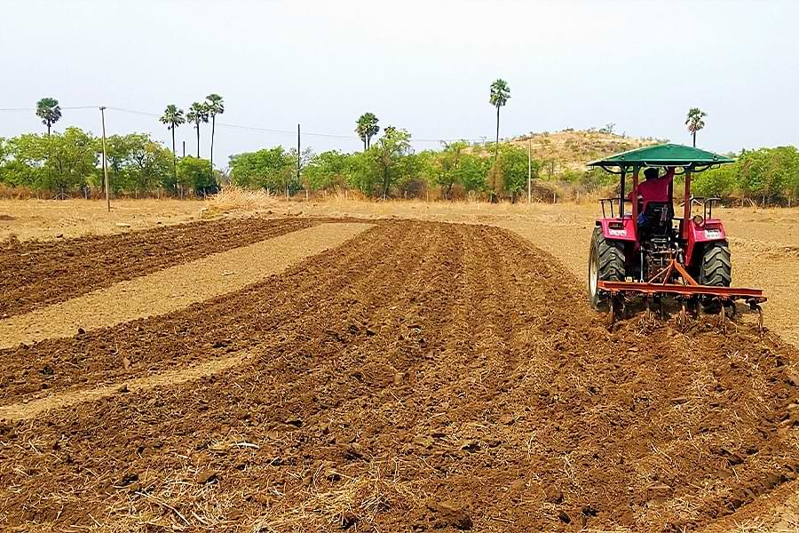
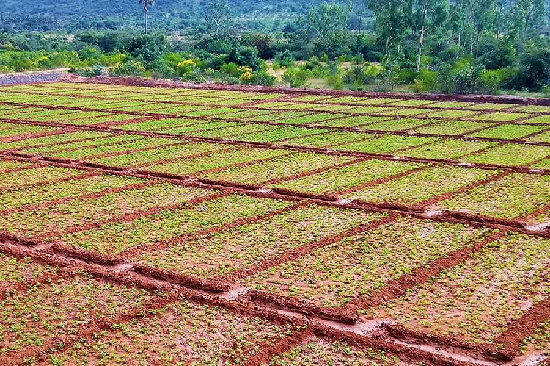
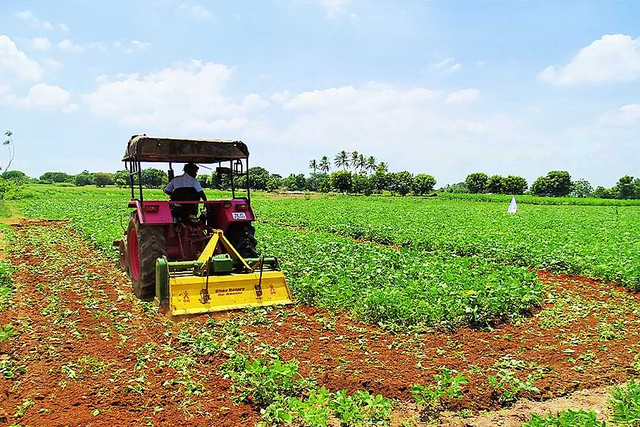

Off-season land treatments such as summer ploughing, compartmental bunding, cultivation across the slope, conservation furrow, mulching with green manure crops, ridges & furrows, broad bed & furrows and micro catchments are the practices assist to increase the moisture status of the fields.
I. Summer Ploughing

II. Compartmental Bunding 
III. Green Manuring - Multigrain Incorporation

| Cereals |
Maize, Cumbu, Sorghum and Minor Millets |
| Pulses |
Green Gram, Black Gram, Horse Gram, Red Gram, Cowpea and Moth Bean |
| Oil Seeds |
Groundnut, Sesame, Castor and Sunflower |
| Spices |
Coriander, Cumin and Mustard |
| Green Manures |
Sunnhemp, Daincha, Agathi, Calotropics, Neem and Kolinchi |
The above seeds to be taken based on the size of the seeds
The seeds has to be mixed together with total quantity of 20 kg and sowing to be taken and then incorporating the crops in the same field, within 45 days after sowing.